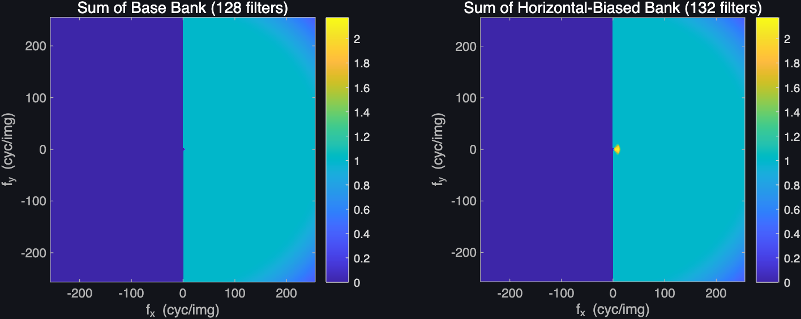

Information-Theoretic Circular Face Space
An exploratory attempt to build a perceptually uniform circular space of unedited celebrity faces without extensive psychophysical calibration.
1. Can Information Theory Create Perceptually Uniform Steps?
Many psychophysical experiments rely on circular stimulus dimensions—such as colour hue or line orientation—because equal physical steps around the circle correspond roughly to equal perceptual steps. Unaligned, naturalistic face photographs have no such built-in geometry. Constructing a perceptually uniform circular face space normally requires thousands of pairwise human similarity judgements.
Here, I asked whether an information-theoretic approach could approximate perceptual uniformity directly from image statistics. Applied to a database of images, information theory treats the stimulus set as a probability distribution p(θ) around a 2D circle. Typical faces fall in dense regions of the distribution and carry low surprisal (-log2 p(θ)), whereas unusual faces fall in sparse regions and carry high surprisal. Under efficient coding, human sensitivity is sharpest where stimuli occur most frequently. Sampling faces uniformly along the cumulative distribution function (CDF) of p(θ) therefore spaces stimuli closer together in dense regions and farther apart in sparse regions, providing a principled first-pass approximation to perceptually uniform steps.

2. Perceptually relevant image processing
Rather than modelling raw pixel values—which are dominated by arbitrary shifts in head alignment, lighting, and background—I transformed each masked face into 2D Fourier space and passed it through a neurally-inspired bank of log-spaced spatial frequency and orientation bandpass filters. Summing the magnitude of each filter's response yields a phase-invariant representation that is tolerant to small spatial shifts.
The base filter bank forms a complete basis set tiling 16 orientations and 8 log-spaced spatial frequency bands (128 filters total). While coding the circular model, I also thought it would be a fun side-hypothesis to test whether biasing the representation toward horizontal structure would improve identity decoding. Human face identification depends disproportionately on horizontal orientation bands—the so-called "biological bar codes" formed by the eyes, eyebrows, and mouth (Dakin & Watt, 2009). To test this, I created a second, overcomplete filter bank by adding 4 narrow-band horizontal filters (±10° around horizontal, 10° bandwidth) across the lowest spatial frequencies.


3. Drawing Boundaries Between Identities
To isolate image statistics that carry facial identity rather than incidental lighting or pose variation, I used standard generalised linear modelling techniques with L2 regularisation (multinomial logistic regression) across 1,144 unedited exemplars from 126 identities (each represented by at least 5 photographs).
The key intuition here is that the model uses each image's filter responses to draw linear decision boundaries between identities. Taking the top two singular vectors of those learned identity boundaries projects all 1,440 faces onto a single 2D plane organised by identity-diagnostic structure.
4. Identity Decoding Accuracy vs. Chance Baseline
I evaluated both models using identical 5-fold cross-validation splits. Both the base model (13.46% ± 1.86%) and the horizontal-biased model (13.55% ± 2.20%) decoded held-out celebrity identities well above the 0.79% Top-1 chance baseline (~17× chance), and reached ~27.8% Top-5 accuracy against a 3.97% chance baseline.
As for my side-hypothesis on horizontal bar codes, adding the 4 extra horizontal filters produced virtually identical accuracy while adding 504 free parameters—indicating that the complete 16×8 bank already captures the relevant horizontal low-frequency information.
5. Resulting Equal-Step Circular Face Space
Projecting all 1,440 faces onto the top two identity-boundary axes, estimating the circular von Mises density (H = 2.64 bits), and sampling uniformly along its cumulative distribution yields 16 unedited faces spaced around the circle starting at 0° (due east).
6. Psychophysical Validation (2AFC Task)
An information-theoretic space is only useful for perceptual experiments if its geometry actually predicts human similarity judgements. To test this, I built a counterbalanced two-alternative forced-choice (2AFC) validation task. On each trial, observers view two pairs of faces: an anchor face paired with its immediate neighbour on the circle ("near") versus the same anchor paired with the face on the opposite side of the circle ("far"). Across passes, the roles of near and far faces are swapped using an opposite anchor so that individual face distinctiveness cannot bias the comparison.
Methodological caveat: Despite above-chance identity decoding, this simple model is almost certainly not perceptually valid as a true face space. Summing filter responses globally discards the spatial configuration of facial features (e.g. eye spacing vs. mouth shape), collapsing 126 identity boundaries onto just two linear axes loses most of the identity variance, and the unaligned, in-the-wild photographs vary substantially in head pose, gaze, and facial expression—cues that dominate human similarity judgements.